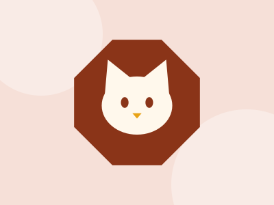
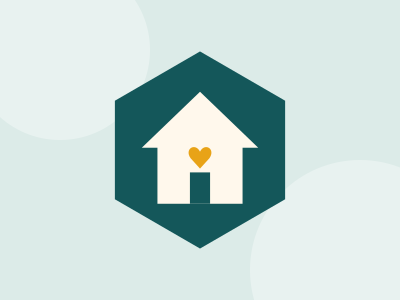
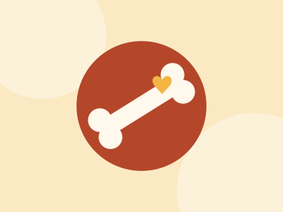

Huella Abierta
Valencia · Asociación
Asociación dedicada al rescate, cuidado y adopción de perros y gatos abandonados.
4 mascotasVer ficha
Conoce a las protectoras verificadas de PawLink y a los PawFriends que cuidan.
Valencia · Asociación
Asociación dedicada al rescate, cuidado y adopción de perros y gatos abandonados.
Madrid · Asociación
Asociación dedicada al rescate, cuidado y adopción de perros y gatos abandonados.
Sevilla · Asociación
Asociación dedicada al rescate, cuidado y adopción de perros y gatos abandonados.

✔ VerificadaZaragoza · Asociación
Asociación dedicada al rescate, cuidado y adopción de perros y gatos abandonados.

✔ VerificadaBarcelona · Asociación
Asociación dedicada al rescate, cuidado y adopción de perros y gatos abandonados.

✔ VerificadaMálaga · Asociación
Asociación dedicada al rescate, cuidado y adopción de perros y gatos abandonados.